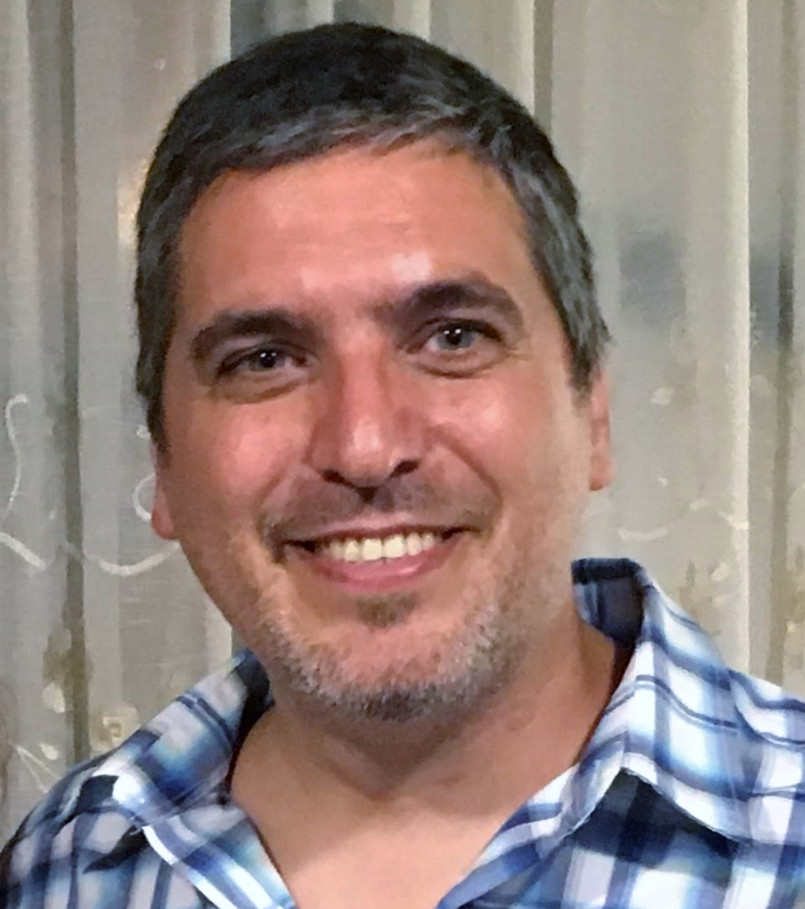

CURRICULUM VITAE DE LUIS CURETTI

DATOS PERSONALES
- Nombre completo: Luis Curetti
- Fecha de nacimiento: 15/09/1976
- Lugar de nacimiento: Caleta Olivia, Santa Cruz, Argentina
EXPERIENCIA LABORAL
-
2017-Actualidad:
- Emprendedor
-
Desarrollando aplicaciones en Python para mercado financiero.
-
2016 Schlumberger:
- Gerente de Recursos Humanos Argentina Sur
-
Basado en Comodoro Rivadavia(Argentina), brindando servicio a más
de 500 empleados en locaciones de Cañadón Seco, Pico Truncado, Rio
Gallegos, Rio Grande y Comodoro Rivadavia.
-
2015 Schlumberger:
-
Gerente de Reclutamiento y Relaciones Universitarias / HR
transformation para Argentina, Bolivia y Chile
-
Basado en Buenos Aires(Argentina), encargado de la selección y
entrenamiento de ingenieros juniors de Universidades en Argentina
Bolivia y Chile.
-
Monitoreo y entrenamiento a gerentes, en indicadores para
optimización de recursos humanos.
-
(2012-2014) Schlumberger:
- Operation Support Center Engineer
-
Basado en Macaé(Brasil), brindando soporte a operaciones en tiempo
real y monitoreando trabajos de alto perfil en aguas profundas y
terrestres a todo América Latina.
-
2011 Schlumberger:
- Professional Field Engineer
-
Basado en Macaé(Brasil), liderando un equipo de operarios e
ingenieros senior para registros en aguas profundas.
-
(2008-2010) Schlumberger:
- General Field Engineer
-
Basado en Ciudad del Carmen(México), liderando un equipo de
operarios e ingenieros para realizar registros eléctricos,
sísmicos y radioactivos en aguas profundas de México y Cuba.
-
(2005-2007) Schlumberger:
- Senior Field Engineer
-
Basado en Cañadón Seco(Argentina), liderando una cuadrilla de
operarios e instruyendo ingenieros junior para realizar registros
de resonancia magnética y sísmicos en pozos petroleros terrestres
de Argentina y Chile.
-
(2003-2004) Schlumberger:
- Field Engineer
-
Basado en Macaé(Brasil), junto a una cuadrilla de operarios
realizando registros eléctricos, radiactivos y servicios que
incluyen explosivos en pozos petroleros desde plataformas
offshore.
Idiomas y otras certificaciones
- Español: Nativo
- Ingles: Profesional Avanzado
- Portugues: Profesional
- Lean /Six Sigma Nivel 2
- Primeros Auxilios
- Extinción de incedios
- Explosivos
- Alta Presión
- Radioactividad
- Manejo defensivo
- Supervivencia Aguas Profundas
- Trabajo en altura